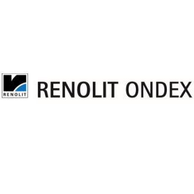

Je vais faire une bref présentation de mon entreprise pour ce bts en SIO.

Je suis donc chez RENOLIT ONDEX ( Site renolit ), une société de transformation de PVC, en plaque pane ou ondulée.
Je n'ai pas un parcour traditionnel je vous présente mon CV Lien vers mon CV
Si vous êtes interesser envoyez moi un mail